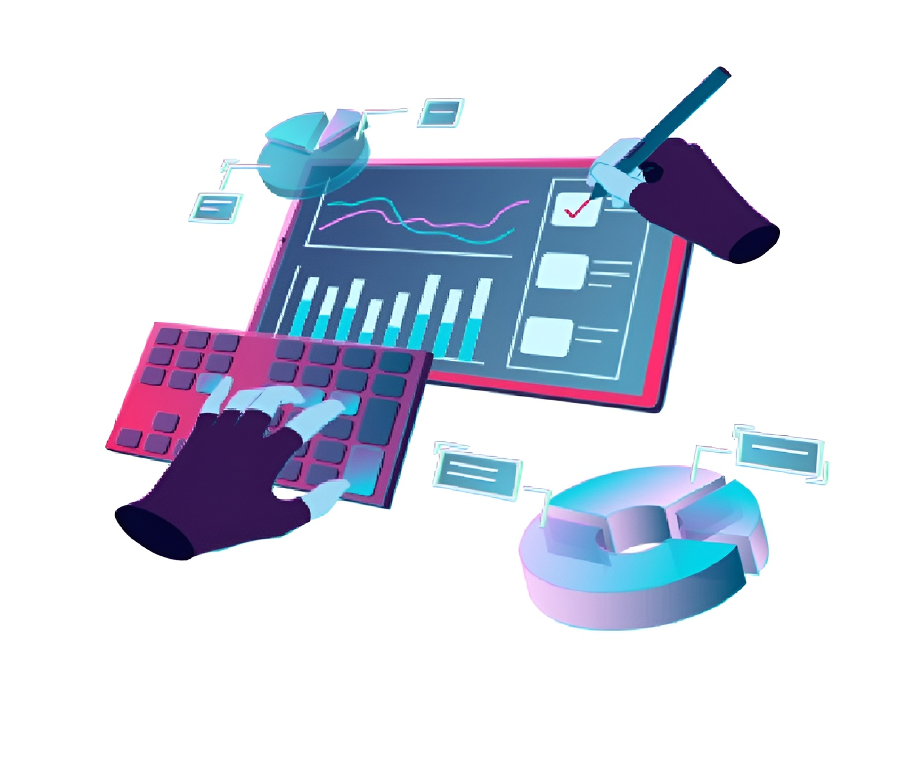
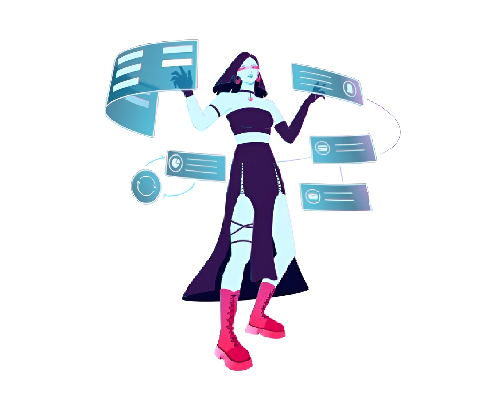
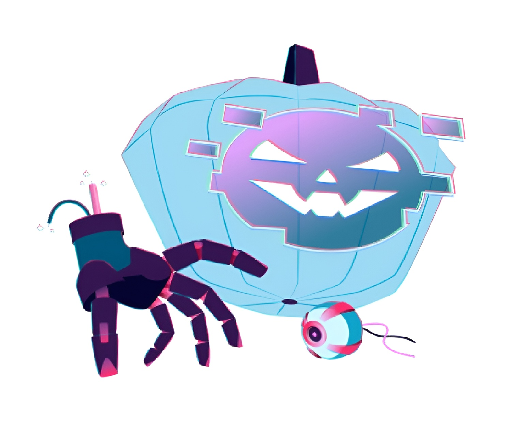
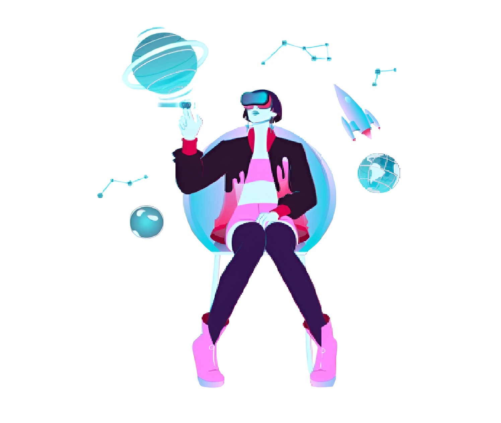

Чек-листы
Чек-лист — это список вещей, которые нужно проверить на тестируемом объекте. Он помогает не пропустить важные тесты, следить за тем, как идут проверки, и оценивать результаты.
Тест-кейсы
Тест-кейс — это инструкция, в которой написаны последовательные шаги и ожидаемый результат для проверки отдельной функции.
Баг-репорты
Баг-репорт — это документ, где детально описана ошибка в программе. Этот документ включает информацию о самой ошибке (краткое описание, важность, приоритет и так далее) и о том, как эта ошибка проявляется.
Техники тест-дизайна
Главная цель тест-дизайна — создать такие сценарии проверки, при которых можно протестировать большую часть функций, используя как можно меньше тест-кейсов.
Postman
Postman — это инструмент для взаимодействия с API, который позволяет тестировщику отправлять запросы к сервисам и анализировать ответы. Он используется для тестирования бэкенда и проверки его работы.